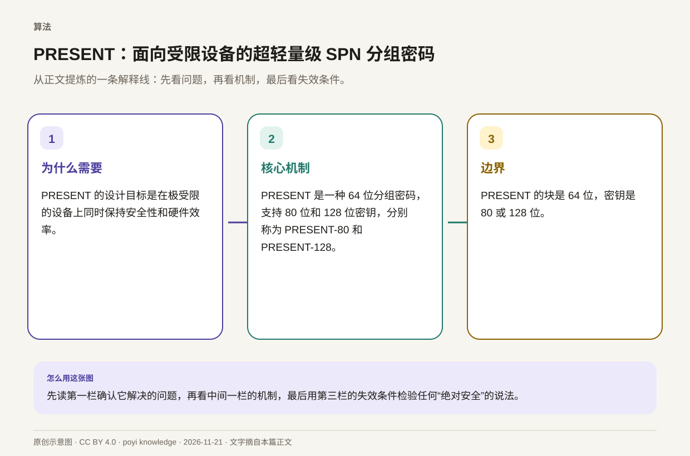
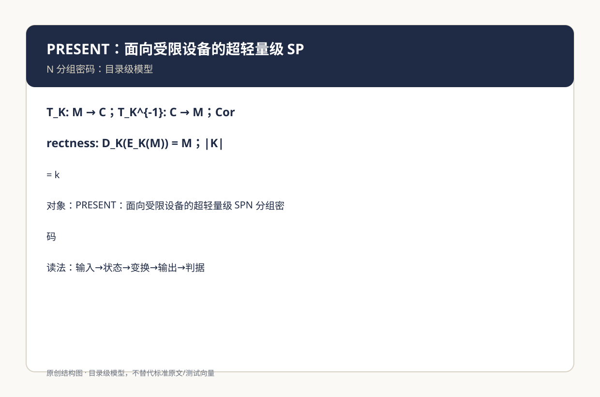

原理与机制
算法：PRESENT 轻量级分组密码（PRESENT）。PRESENT 是一种 64 位分组密码，支持 80 位和 128 位密钥，分别称为 PRESENT-80 和 PRESENT-128。它采用代换-置换网络（SPN），共 31 轮；每轮依次执行轮密钥异或、16 个并行的 4 位 S-box 代换和一个固定的位置换，最后一轮之后再异或一次轮密钥。```text state = state xor K_i state = sBoxLayer(state) state = pLayer(state)
（重复 31 轮，最后再 xor K_32）
S-box 是一个 4 位到 4 位的置换，输入 `0,1,...,F` 对应输出 `C,5,6,B,9,0,A,D,3,E,F,8,4,7,1,2`。pLayer 把第 i 位移动到第 P(i) 位，其中 `P(i) = 16*(i mod 4) + floor(i/4)`；例如第 1 位移动到第 16 位，第 4 位移动到第 1 位。这个置换只用连线，不需要逻辑门，适合硬件实现。PRESENT-80 的密钥扩展把 80 位密钥保存在寄存器 K 中，每轮取最左边 64 位作为轮密钥；取出后把 K 循环左移 61 位，对最左边 4 位应用 S-box，再把轮计数器 i 异或到第 19 到 15 位。PRESENT-128 使用 128 位寄存器，循环左移 61 位后对最左边 8 位应用两个 S-box，再把轮计数器异或到第 66 到 62 位。两种密钥扩展都产生 32 个轮密钥，对应 31 轮和最后的密钥异或。
为什么重要
PRESENT 的设计目标是在极受限的设备上同时保持安全性和硬件效率。它的 S-box 只有 4 位，pLayer 只是固定连线，轮函数非常规整；原论文报告其硬件实现约为 1570 个门等效，适合 RFID 标签和传感器网络这类面积、功耗和成本都受限的环境。它也是理解 SPN 的一个清晰样本：S-box 提供非线性，pLayer 提供扩散，轮密钥打断对称性，31 轮把局部变化扩展到整个状态。与 AES 的字节 S-box 和 MixColumns 相比，PRESENT 的 4 位 S-box 和位置换更容易在硬件中做小，但软件实现通常不占优势。PRESENT 不是 AES 的替代品。它适合资源受限、数据量有限的场景；需要处理大量数据或长期密钥时，64 位块和 80 位密钥的安全边界更窄，ISO/IEC 29192-2 也为此给出了单密钥加密次数的限制。
应用与实例
PRESENT 被 ISO/IEC 29192-2 纳入轻量级分组密码标准，和 CLEFIA、LEA 一起构成该标准的三个算法。它的典型应用是 RFID 标签、无线传感器网络和其他资源受限设备；这些场景更关心门数、功耗和成本，而不是通用服务器上的吞吐量。原论文在 2007 年的 CHES 会议上提出 PRESENT，并给出四组测试向量。本文用这四组向量验证加密和解密：全零/全一明文与全零/全一 80 位密钥的组合，覆盖 S-box、pLayer 和密钥扩展的主要路径。PRESENT 只定义分组密码本身，不定义工作模式。实际使用仍需选择 CBC、CTR、GCM 等模式，并处理 IV、nonce、填充或认证；不能把一个分组密码直接当成完整的加密方案。

边界与攻击面
PRESENT 的块是 64 位，密钥是 80 或 128 位。与 AES 的 128 位块相比，64 位块在生日碰撞意义下的安全边界更窄；ISO/IEC 29192-2 的 Annex D 另外给出了单个密钥可加密次数的限制。这个限制是标准的一部分，不是可选的性能建议。80 位密钥也比现代通用场景常用的 128 位密钥短。PRESENT 的定位是受限设备，不是长期保护高价值数据；密钥长度和块大小必须与威胁模型匹配。### 无完整性
分组密码本身只提供伪随机置换，不提供完整性。PRESENT 不检测密文修改；需要认证时应使用 AEAD 或加密后再 MAC，不能依赖分组密码的轮函数。### 侧信道与实现
PRESENT 的 4 位 S-box 和位置换在硬件上很小，但实现仍可能泄露功耗、时序或电磁信息。掩码、常量时间比较和故障防护属于实现层，不在算法定义内。本文的教学实现只处理 PRESENT-80/128 的固定向量、密钥扩展、S-box 和 pLayer 的逆变换，以及一位差异的扩散演示。它不生成密钥、不做常量时间处理、不实现工作模式、协议、密钥管理或侧信道防护，不能用于生产环境。
历史与背景
PRESENT 由 Bogdanov、Knudsen、Leander、Paar、Poschmann、Robshaw、Seurin 和 Vikkelsøe 在 2007 年的 CHES 会议上提出。论文把安全性和硬件效率放在同等重要的位置，报告了约 1570 个门等效的实现，并面向 RFID 标签和传感器网络。ISO/IEC 29192-2 后来把 PRESENT 纳入轻量级分组密码标准；当前版本是 2019 年的第二版，和 CLEFIA、LEA 并列。这个标准化路径说明，轻量级密码不是弱化版 AES，而是针对另一类资源约束重新设计的算法。PRESENT 的 31 轮、4 位 S-box 和位置换也成为后续轻量级 SPN 设计的参考。轻量级 SPN 的安全性通常通过差分、线性、代数和其他 reduced-round 分析来评估；这些分析不改变算法定义，但决定了实际部署时的轮数和密钥选择。
逐步示例与核验
复算示例
取标准或公开测试向量中的一组参数，按“输入—执行—输出”记录：先写出该条目的形式式 (C=E_K(P;r),\qquad P=D_K(C))；再按规范顺序执行每一步，最后把输出与独立实现或标准向量逐字节对照。若没有可引用的数值向量，就只记录结构步骤，不伪造输出。
参考出处
- Wikipedia search entry for PRESENT 轻量级分组密码. https://zh.wikipedia.org/w/index.php?search=PRESENT%20%E8%BD%BB%E9%87%8F%E7%BA%A7%E5%88%86%E7%BB%84%E5%AF%86%E7%A0%81
- Handbook of Applied Cryptography (Menezes, van Oorschot, Vanstone). https://www.cacr.math.uwaterloo.ca/hac/